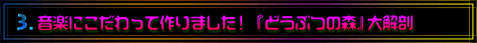
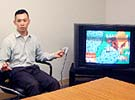
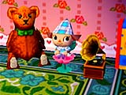
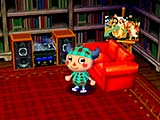
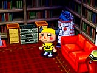

|  |
| −−『どうぶつの森』はズバリ、どういったソフトなんでしょうか。 |
| 戸高 コミュニケーションソフトですね。プレイヤーは、どうぶつたちのいる村に住んで、村の生活を楽しみます。時計の機能が入っていて、季節や時間ごとにさまざまなイベントが起こるんです。僕がサウンド面のディレクションをして、阪東が効果音を担当しました。 |
| −−音楽にこだわって作ったそうですが……。 |
| 戸高 そうですね。音楽スタッフは、楽曲が４人、サウンドプログラマ兼効果音担当が２人です。 |
| 阪東 音楽的な要素はいくつかあって、まずは村のメロディです。これは、どうぶつたちに話しかけた時に流れるメロディです。「村メロ掲示板」という所で、ユーザーが自由に作曲できるんですよ。次が、どうぶつたちがしゃべっているどうぶつ語ですね。最初は音声合成でリアルに話すことをめざしたんですけど、いかんせん、話すときにメッセージが表示されるというゲームなので、画面にあわせるとすごく早口になっちゃうんですよ。よく考えてみるとどうぶつだから、無理に話す必要はない。なにを言っているかわからないけど、なにかしらしゃべっているというのが重要なんじゃないかなあと思って、この言葉を作り出しました。これは、独自の技術で作っていて、特許を申請しているんですよ。それから、音を出すハニワというのがたくさんありまして、普段は土中に埋まっていますが掘り返して家に持ち帰り楽しむことができます。また、家の中には音の出る家具や楽器をそろえることができます。最後に、「ミュージック」ですね。家具の中には、ラジカセやコンポ、蓄音機などがあります。村のあるところで、あるキャラクターに「ミュージック」をもらってくると、そういった再生機器で音楽を聴くことができるんです。蓄音機の場合は針飛びがしたレトロな音、コンポだときれいな音で再生されたりするんですよ。 |
|  |  |  |
| −−なぜ、そこまで音楽に凝ることになったのですか。 |
| 戸高 このゲームは、カートリッジによって、少しずつ村の地形が違うんですよ。また、出てくる動物や部屋も違います。そこで、音楽にもそういう変化をとりいれたいと思ったんです。でも、昔からゲームの中ではそういう音作りがされてきたんですよね。僕も『ヨッシーストーリー』の中で、ヨッシーの状態によって音楽を変えるということをしています。 |
| −−なるほど。インタラクティブな音楽ということですよね。曲数は全部でどれくらいなんですか。 |
| 戸高 全部で199曲あります。僕の下にサウンドスタッフが３人いるんですけど、フィールドのＢＧＭ、家の中のＢＧＭ、イベントのＢＧＭ、とはっきりわけました。基本的に仕事ができるスタッフばかりだったので、あとはお任せでした。ただし、ひとつ明確な方向をはっきり提示してあげないと自由には作れないので、それだけはバシッと打ち合わせをしました。最初はほのぼのしたゲーム内容にあわせて、アコースティックな感じの音楽をつけようかと思ったんです。でも、そうするとちょっと“ｔｏｏ ｍａｃｈ ほのぼの”ですよね。それで、シンセサイザーとかのすごく電気的な音を使っているんだけど、アコースティックに聞かせるような曲作りというのをコンセプトにしまして、フィールドの音楽はそれで作ってもらいました。 |
| −−部屋の中やイベントシーンの音楽は、また違うコンセプトなんですか。 |
| 戸高 ええ、そうですね。部屋の中は基本的に無音なんですよ。その中でミュージックを再生することによって、初めて音楽が流れるんです。そのミュージックに関しては、ポータブルなキーボードで作ったような、チープなかわいい音というイメージで作ってもらいました。 |
| −−イベントの音楽というのは、どういう指示を出したんですか。 |
| 戸高 たとえば、イベントにはハロウィンとかもあるんですけど、それに関しては「基本的には楽しいけれど、ちょっとヘン」という指示を出して作ってもらったりしました。言ったら言ったぶん、みんなそういうイメージでちゃんと作ってくれるので、最初のひとことだけ言ってあとは安心して任せられたんです。容量がデカいとか（笑）、そういう時は、直してもらいましたけど。 |
| −−曲の制作にはどれくらいの時間がかかったんですか。 |
| 戸高 ほかの人たちは１年をかけてやっていましたけど、僕はちょっと変わっていて、すでにある曲のアレンジとか展開を担当していたんです。２週間で58曲を作らなくちゃいけなくて、時間がないので、もう電車の中とかで作ってました（笑）。 |
|
|
|
|
|